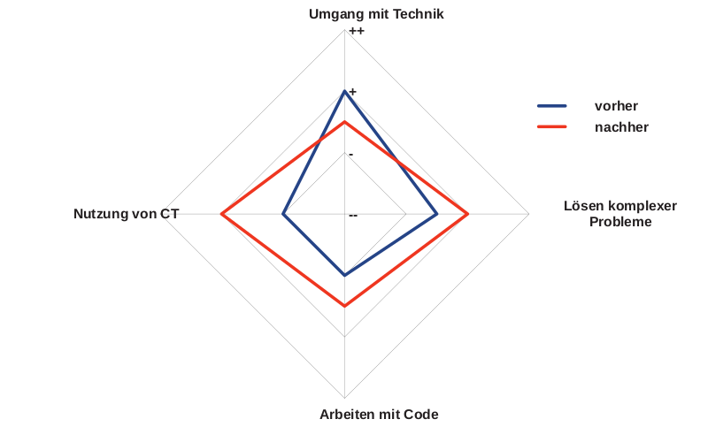
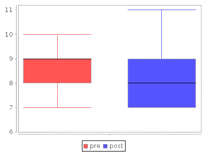

Evaluation eines Robotiksystems
in der weiterführenden Schule
Übersicht
- Einführung
- Aktuelle Situation
- Unterrichtsansatz
- Evaluation
- Callystotest
- Ergebnisse
- Diskussion
- Fazit
1. Einführung
Computational Thinking (CT)
- Probleme strukturiert formulieren
- Probleme strukturiert formulieren
- Daten organisieren & analysieren
- Probleme strukturiert formulieren
- Daten organisieren & analysieren
- Darstellung von Daten
- Probleme strukturiert formulieren
- Daten organisieren & analysieren
- Darstellung von Daten
- Automatisierung von Lösungen
- Probleme strukturiert formulieren
- Daten organisieren & analysieren
- Darstellung von Daten
- Automatisierung von Lösungen
- Identifizierung, Analyse und Umsetzung von Lösungen
- Probleme strukturiert formulieren
- Daten organisieren & analysieren
- Darstellung von Daten
- Automatisierung von Lösungen
- Identifizierung, Analyse und Umsetzung von Lösungen
- Verallgemeinerung und Übertragung eines Problemlösungsprozesses
CT in Lehrplänen in Europa
Roboter für den Bildungsbereich
Forschungsfragen
- Verbessern sich die Fähigkeiten von Schüler*innen durch den Einsatz von Robotern im Unterricht?
- Ist der Einsatz von Bildungsrobotern nützlich für den Unterricht?
2. Aktuelle Situation
- Kein bundesweit einheitliches Modell
- Niedersachsen: Ab Schuljahr 23/24 schrittweise Einführung von Informatikunterricht
2.1. Unterrichtsansatz
Anforderungen an Roboter für den Unterrichtseinsatz:- Einsatz wie geliefert
- Preis: < 100€
- verschiedene Zielgruppen
- Gute Dokumentation
- Empfehlungen für den Lehreinsatz
2.1 Unterrichtsansatz
Verwendung von Edison-Robotern- Pädagogisches Konzept
- Entwicklungsumgebung
- Unterrichtsmaterialien
- Preis ca. 50€/Roboter
2.1 Unterrichtsansatz
- Kennenlernen des Roboters mit Barcodes
- Programmierung des Roboters
- "EdBlocks"
- "EdScratch"
- "EdPy"
2.1 Unterrichtsansatz
- 4 Unterrichtsstunden
- Jeweils 1-2 Units
- 2-3 Schüler*innen
Die Units
- Kennenlernen des Systems
- Ansteuerung der Motoren
- While- & For-Schleife
- Ausdrücke & Variablen
- Reagieren auf Sensoreingaben
3. Evaluation
- 12. Klasse
- Berufliches Gymnasium Technik
- 9 Schüler*innen
- 16-23 Jahre alt
3. Evaluation
Ablauf- Vortest
- Unterrichtsstunden mit Robotern
- Nachtest
3.1. Callystotest
- "Callysto Computational Thinking test"
- frei nutzbar
- deutsche Übersetzung
- leichte Anpassungen
- ca. 20 Minuten
3.1. Callystotest
- Teil 1 - Aussagen bewerten
- Umgang mit Technik
- Lösen komplexer Probleme
- Arbeiten mit Code
- Nutzung von CT
- Vorkenntnisse Programmierung

3.1. Callystotest
- Teil 2 - Abfrage algorithmischer Fähigkeiten
- Einfache Abläufe
- Verzweigungen
- Schleifen
- Feedback
3.2. Ergebnisse - Vortest T1
3.2. Ergebnisse - Vortest T2

3.2. Ergebnisse - während der Durchführung
3.2. Ergebnisse - Nachtest T1
3.2. Ergebnisse - Nachtest T2
3.3. Diskussion
- ⇧ gesteigertes Interesse
- ⇧ gesteigerte Motivation
3.3. Diskussion
- negative Entwicklung bei CT-Kompetenzen
- Entwicklung in einer Aufgabe sichtbar
4. Fazit
- Keine sichtbaren Verbesserungen in CT-Kompetenzen
- erhöhtes Interesse an CT
- Robotereinsatz im Unterricht lohnt sich auf jeden Fall!
- Ergebnisse nicht allgemeingültig
- Indiz für Erfolg
- Nur Roboter machen keinen besseren Unterricht
Danke!
für eure Aufmerksamkeit! ...und an Holger Buchmann und seine Klasse an der BBS Burgdorf!Anhang
Cluster "Umgang mit Technik"
| Vortest | Nachtest | |
|---|---|---|
| Ich benutze gerne Technik | ++ | ++ |
| Ich finde es einfach, neue Technologien zu nutzen | + | + |
| Ich bin zuversichtlich, dass ich meinen
Computer selbst reparieren kann, wenn er nicht funktioniert |
- | - |
| Die Leute bitten mich um Hilfe mit ihrem Computer | + | - |
Cluster "Umgang mit Technik"
| Vortest | Nachtest | |
|---|---|---|
| Ich benutze gerne Technik | ++ | ++ |
| Ich finde es einfach, neue Technologien zu nutzen | + | + |
| Ich bin zuversichtlich, dass ich meinen
Computer selbst reparieren kann, wenn er nicht funktioniert |
- | - |
| Die Leute bitten mich um Hilfe mit ihrem Computer | + | - |